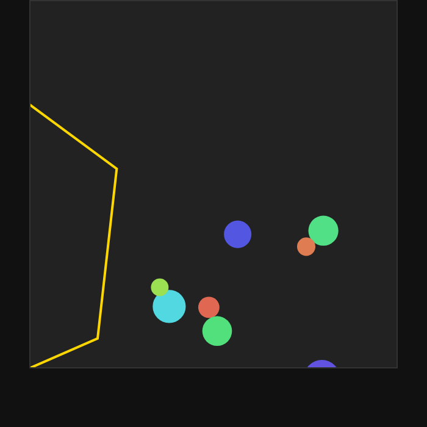

nvidia nemotron 3.5 lightning 30b a3b 맥 스튜디오 로컬 llm 실측 결과
맥 스튜디오 M5 Max, 통합 메모리 48GB 환경에서 빠른 속도로 파이썬 코딩과 한국어 처리를 원하는 사용자에게 맞는 로컬 llm 추천 모델입니다.
맥 스튜디오 M5 Max, 통합 메모리 48GB 환경에서 mlx-lm 0.32.0 (MLX 0.32.3)으로 nvidia nemotron 3.5 lightning 30b a3b 로컬 llm 모델을 테스트했습니다. 짧은 입력(512토큰) 답 쓰는 속도는 초당 172.4토큰으로 사람이 읽는 속도(초당 약 다섯 토큰 안팎)보다 빠르며 최대 메모리 사용은 21.3GB입니다. 한국어 답변 점수 5점 만점에 5점, 파이썬 코딩 10 / 10을 기록하여 로컬 llm 성능 면에서 우수한 결과를 보였습니다.
이 맥에서 잰 숫자
| 모델 | NVIDIA-Nemotron-3.5-Lightning-30B-A3B-4bit |
|---|---|
| 원본 저장소 | mlx-community/NVIDIA-Nemotron-3.5-Lightning-30B-A3B-4bit |
| 가중치 용량(GB) | 17.8 |
| 라이선스 | other |
| 측정 기기 | 맥 스튜디오 M5 Max, 통합 메모리 48GB |
| 측정 도구 | mlx-lm 0.32.0 (MLX 0.32.3) |
| 측정일 | 2026-10-21 |
| 짧은 입력(512토큰) 답 쓰는 속도(토큰/초) | 172.4 |
| 짧은 입력 읽는 속도(토큰/초) | 3295 |
| 긴 입력(4096토큰) 답 쓰는 속도(토큰/초) | 169.8 |
| 긴 입력 읽는 속도(토큰/초) | 4251 |
| 최대 메모리 사용(GB) | 21.3 |
| 한국어 답변 점수(5점 만점) | 5 |
| 한국어 답변에 외국어 섞임 | 없음 |
| 한국어 객관식(KMMLU 50문항) 정답 | 21 / 50 |
| 도구 호출 정확도(10문항) | 6 / 10 |
| 파이썬 코딩(10문제, 테스트 전부 통과) | 10 / 10 |
| 형식 지시 따르기(10문항) | 9 / 10 |
| 긴 글 속 문장 찾기(약 16K토큰) | 찾음 (4.8초) |
| 긴 글 속 문장 찾기(약 32K토큰) | 찾음 (10.1초) |
| 한 번에 만든 튀는 공 애니메이션 | 움직임 |
답 쓰는 속도는 1초에 만들어 내는 토큰(글자 조각) 수입니다. 같은 모델도 기기·메모리·도구 버전에 따라 달라집니다.
한국어로 물어봤더니
질문: 맥에서 로컬 AI 모델을 처음 써 보려는 대학생에게, 장점 두 가지와 주의할 점 한 가지를 한국어로 짧게 알려 줘.
대학생에게 딱 좋은 맥(Mac)에서 로컬 AI 모델 사용의 핵심 요약입니다. **장점 두 가지:** 1. **프라이버시 보호:** 데이터가 외부로 전송되지 않고 맥 안에서만 처리되므로, 개인 정보 유출 걱정 없이 민감한 자료를 분석할 수 있습니다. 2. **오프라인 사용 가능:** 인터넷 연결 없이도 모델을 구동할 수 있어, 도서관이나 지하철 등 어디서든 끊김 없이 활용할 수 있습니다. **주의할 점 한 가지:** * **하드웨어 사양 확인:** 특히 **'M1/M2 칩'이 아닌 인텔 기반 맥**의 경우, 일부 최신 AI 모델이 구동되지 않거나 매우 느리게 작동할 수 있습니다. 구매 전 본인의 맥 사양이 지원되는지 반드시 확인하세요.
요청된 형식과 내용을 정확히 전달하며 문장이 매우 자연스럽습니다.
한 번에 만든 튀는 공 애니메이션
"회전하는 육각형 안에서 공 8개가 튀는 HTML 을 한 파일로 만들어 줘"라는 요청에 처음 낸 답을 그대로 실행한 화면입니다.

이럴 때 맞아요
- 맥 스튜디오 M5 Max, 통합 메모리 48GB 환경에서 빠른 로컬 llm 성능을 원할 때
- 파이썬 코딩(10문제, 테스트 전부 통과 10 / 10) 및 형식 지시 따르기(9 / 10) 작업이 필요할 때
- 한국어 답변 점수 5점 만점에 5점 및 외국어 섞임 없음의 자연스러운 문장 생성이 필요할 때
이럴 때는 다른 모델을
- 한국어 객관식(KMMLU 50문항) 정답 21 / 50 이상의 높은 지식 시험 점수가 필요할 때
- 도구 호출 정확도(10문항) 6 / 10보다 더 높은 수준의 도구 호출 성공률이 필수적일 때
자주 묻는 질문
맥 스튜디오 로컬 llm 환경에서 답 쓰는 속도는 얼마나 빠른가요?
짧은 입력(512토큰) 답 쓰는 속도는 초당 172.4토큰, 긴 입력(4096토큰) 답 쓰는 속도는 초당 169.8토큰입니다. 이는 사람이 읽는 속도(초당 약 다섯 토큰 안팎)보다 빠릅니다.
가중치 용량과 최대 메모리 사용량은 얼마인가요?
가중치 용량은 17.8GB이며, 최대 메모리 사용은 21.3GB입니다. 실측은 맥 스튜디오 M5 Max, 통합 메모리 48GB 기기에서 진행되었습니다.
한국어 처리 품질과 코딩 테스트 결과는 어떤가요?
한국어 답변 점수는 5점 만점에 5점이며 외국어 섞임은 없었습니다. 또한 파이썬 코딩(10문제, 테스트 전부 통과)은 10 / 10, 형식 지시 따르기는 9 / 10을 기록했습니다.
긴 글 속 문장 찾기 실측 시간은 어떻게 되나요?
긴 글 속 문장 찾기 결과 약 16K토큰에서는 4.8초, 약 32K토큰에서는 10.1초 만에 찾았습니다.
측정 방법
맥 스튜디오 M5 Max, 통합 메모리 48GB에서 mlx-lm 0.32.0 (MLX 0.32.3)로 측정했습니다. 입력 512토큰·4096토큰 뒤 128토큰을 생성하는 시험을 여러 번 반복한 평균이고, 한국어 답변은 온도 0으로 한 번 생성한 원문 그대로입니다(생각 과정은 떼고 답만). 추가 시험(있는 경우)은 모두 코드로 채점합니다: 한국어 객관식은 KMMLU(HAERAE-HUB, CC BY-ND 4.0) 10개 분야 50문항, 도구 호출·파이썬 코딩·형식 지시는 각 10문항(코딩은 인터넷이 막힌 환경에서 숨겨진 테스트 실행), 긴 글 찾기는 약 1만6천·3만2천 토큰 글 속에 넣은 문장을 찾는지, 튀는 공은 한 번에 만든 HTML 이 실제로 움직이는지입니다. 생각 기능은 끄고 온도 0으로 실행했습니다. 가중치는 Hugging Face의 mlx-community/NVIDIA-Nemotron-3.5-Lightning-30B-A3B-4bit를 썼습니다.
측정일 2026-10-21 · 커밋 한 모금